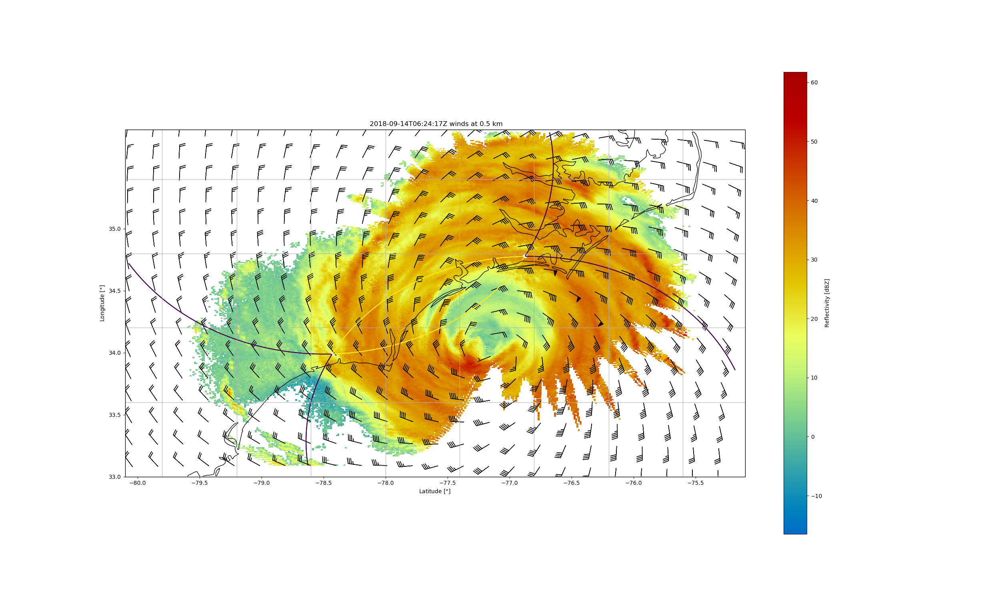

Note
Go to the end to download the full example code
Example on integrating radar and HRRR data#
This is an example of how to retrieve winds in Hurricane Florence. In this example, we use data from 2 NEXRAD radars as well as from the HRRR to retrieve the winds
This example has been updated to use _Herbie to retrieve the HRRR data. In addition, _pooch is used to retrieve the gridded data for the example. Herbie is not required to run PyDDA, but must be installed to run this example.
Author: Robert C. Jackson
import urllib
import pyart
import pydda
import matplotlib.pyplot as plt
import cartopy.crs as ccrs
import numpy as np
import pooch
from herbie import Herbie
H = Herbie("2018-09-14 06:00", model="hrrr", product="prs", fxx=0)
H.download()
grid_mhx_path = pydda.tests.get_sample_file("grid_mhx.nc")
grid_ltx_path = pydda.tests.get_sample_file("grid_ltx.nc")
grid_mhx = pyart.io.read_grid(grid_mhx_path)
grid_ltx = pyart.io.read_grid(grid_ltx_path)
grid_mhx = pydda.constraints.add_hrrr_constraint_to_grid(grid_mhx, H.grib)
grid_mhx = pydda.initialization.make_constant_wind_field(grid_mhx, (0.0, 0.0, 0.0))
out_grids, _ = pydda.retrieval.get_dd_wind_field(
[grid_mhx, grid_ltx],
Co=1e-3,
Cm=1.0,
Cmod=1e-3,
Cx=1,
Cy=1,
Cz=1,
max_iterations=100,
mask_outside_opt=True,
vel_name="corrected_velocity",
engine="tensorflow",
model_fields=["hrrr"],
)
fig = plt.figure(figsize=(25, 15))
ax = plt.axes(projection=ccrs.PlateCarree())
ax = pydda.vis.plot_horiz_xsection_barbs_map(
out_grids,
ax=ax,
bg_grid_no=-1,
level=1,
barb_spacing_x_km=20.0,
barb_spacing_y_km=20.0,
cmap="pyart_HomeyerRainbow",
)
ax.set_xticks(np.arange(-80, -75, 0.5))
ax.set_yticks(np.arange(33.0, 35.5, 0.5))
plt.title(out_grids[0].time["units"][13:] + " winds at 0.5 km")
plt.show()
Total running time of the script: (0 minutes 0.000 seconds)